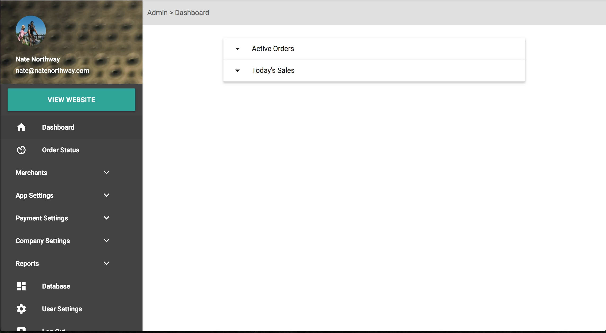
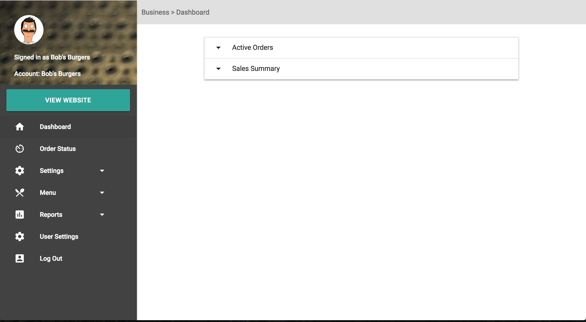
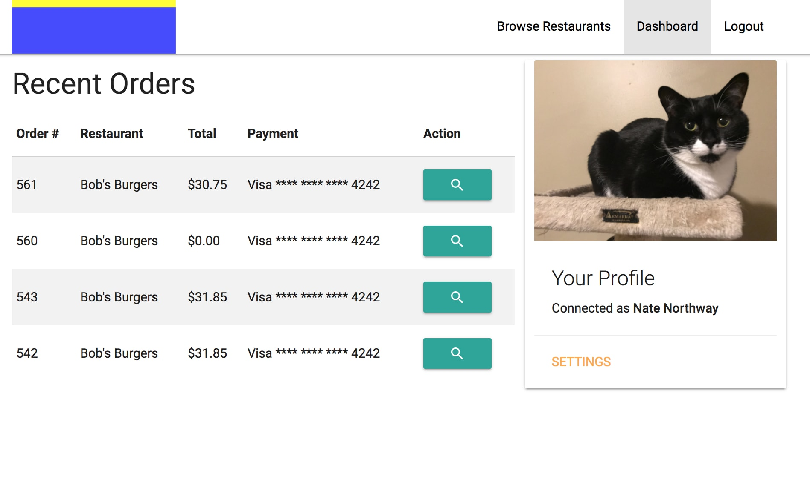

Getting Started
Gittr is a web app that enables local-level couriers to facilitate online ordering for their partnered restaurants. Gittr helps courier companies manage business-to-business relationships and last mile delivery services with partners. Gittr provides a web interface for end users to order and pay online, dispatching the order to the courier company and the product provider simultaneously. The courier company then picks up the order from the partnered business and delivers it.
If you already have a Gittr account, that's great, and you can skip to Setting Up Your Account, but if you don't have a Gittr account yet, continue reading.
Signing Up For An Account
To sign up for an account, follow this link to our signup form. We'll set up your instance of Gittr, prepare your database, and let you know when your installation is ready to use. We'll send you log in information and your URL to log in to the administration dashboard.
Logging In
To log in to your administration dashboard, go to
https://gittr.co/your-company-name/admin/login.
There, you'll enter your login credentials and be redirected to the
dashboard.
An Overview of Gittr
Gittr presents a way for local level courier companies (represented
by Admin Users) to enable online ordering for their partnered merchants
(represented by Merchant Users). Gittr accepts and processes
payment from the customer (represented by End Users), takes out an
application fee, and deposits the money in company's account. The
merchant and company are notified about the order and the merchant
prepares the order for pickup by the company. The company then completes
delivery.
Setting Up Your Account
After signing up for Gittr, you'll be sent an email with your URL to
start set up. Fill out the required fields and you'll
be redirected to the login screen. Once logged in, we strongly
encourage you to change your password.
After changing your password, log out, then log back in to confirm
the change.
The Role of the Administrator
The administrator (or administrative team) is a representative of the courier company that Gittr is licensed to. They have a few important responsibilities, including:
- Creating and managing merchants and merchant accounts
- Managing company settings
- Managing orders (including dispatching, cancelling, and refunding)
- Managing company settings
Admin Dashboard
The administration dashboard (referred to as Admin Dashboard) is where all of the settings of your company are changed, where new merchants can be added, and where some control of incoming orders is placed. Here is a snapshot of the dashboard:
Menu Items
- View Website: See your website
- Dashboard: The front page of the admin dashboard
- Order Status: View all orders
- Notifications: View and take action on notifications
-
Merchants: Drop Down List
- List: View and access all merchants and administrative merchant settings
-
App Settings: Drop-down list
- General Settings: View and change basic information about your company
- User List: View and edit other administration and merchant user profiles
- SEO/Social: View and change SEO and social media settings
-
Payment Settings: Drop-down list
- Billing Settings: Add your credit card to enable automatic billing
- Stripe Settings: Connect your Stripe account to receive payments
-
Company Settings: Drop-down List
- Analytics: View and manage your Google Analytics Script code
- Customer List: A list of your customers
- Zones: View and manage your service areas
- Options: View and manage your company's description and other options
- Privacy Policy: View and manage your company's privacy policy
- API Settings: View and manage your company's API Keys and settings
-
Reports: Drop-down list
- Sales Report: See a day's sales report
- Sales Summary Report: See your cumulative sales report
- User Settings: View and change your user profile's settings
- Log Out: Log out of the administration dashboard
The Dashboard
The Dashboard holds a snapshot of what's currently going on with your company. There are two collapsible items - Active Orders and Today's Sales. Clicking the "Active Orders" dropdown will show you a list of currently active orders with the option to view them. Clicking the "Today's Sales" dropdown will give you an overview of the day's activity in real numbers, including an order count, generated revenue, payouts, and profits.
Order Status
All of your company's orders will appear on this screen, separated
into four categories:
New, Active, Completed, and Refunded.
New orders are orders that have been received and
paid for but have not yet accepted by the merchant or your company.
Accepting the order by clicking "Accept" under "actions" will move
the order to the "active" category. Orders can be accepted by
merchants or company administrators. Declining the order by clicking
"Decline" under "actions" will move the order to the "refunded"
category and the order will be refunded to the customer.
When an order is received, three emails are sent out: one to your
company, one to the merchant to notify them, and one to the
customer as a receipt. The merchant has the option from their email
alert to accept or decline the order. Once the merchant has accepted
or declined an order, there is nothing you need to do further (except
complete the delivery, of course!).
If your company does not enable TwinJet, the order status can be
changed from this screen. To change an order's status, click the
"status" drop down on the order. Select the status ("cancelled",
"ready", "picked up", or "delivered") to change it to. The status
will automatically update once a status is selected.
Active orders are orders that have been received, paid for, dispatched to TwinJet, and accepted by the merchant or company. Orders in this category are somewhere between getting dispatched and getting to the customer.
Completed orders are orders that have been delivered to the customer.
Refunded orders have been declined or refunded to the customer. These orders will still be available for reference.
Cancelled order have been cancelled due to a reason beyond control of the company. Various reasons for cancelled orders include a customer cancelling the order, a merchant cancelling the order due to product shortage, or a company cancelling an order because it was undeliverable.
Notifications
Notifications will let you know about important updates and information from Gittr. We will also let you know here about missing configuration items that will help Gittr function better if they are set. Since all Gittr users benefit mutually from ensuring good SEO, we'll also let you know through the notifications if there is anything you can set up to encourage better rankings across the board.
Merchants
List
A list of all of your company's merchants and light details with options to edit their privileged settings and log in to their merchant dashboard.
Log In
Log in to the merchant dashboard.
Edit
Clicking "edit" on a merchant in the merchant list presents the user with various options:
- Name: The merchant's name
- Email: The merchant's email address for notifications
- Phone: The merchant's main, public telephone number
- Description: A description of the merchant
-
Status: The merchant's current status
- Active: The merchant is active, has at least one menu built, all options set and is accepting orders
- Unpublished: The merchant has at least one menu built and all options set, but is not accepting orders
- Inactive: The merchant either doesn't have any menus built, and/or doesn't have all their options set and can not accept orders.
- Payment Live/Test:
- Order To Call: Checking this box disables online ordering and changes the "cart" button on the merchant menu to a "call now" button.
- Minimum Order Amount: The minimum cart value needed for a customer to order from this merchant
- External Menu Link: If this merchant is partnered but would like to host their menu and ordering on an external menu (like Eat24 or GrubHub), link their menu here. This will disable regular menu views for this merchant.
-
Commission: Change how a merchant is paid or
pays your company
-
Flat Fee: check this box if this merchant
pays a flat fee per delivery
If flat fee is checked, you must fill out the "amount" field immediately below the checkbox -
Percentage of Order: check this box if this
merchant pays a percentage per delivery
If percentage of order is checked, you must fill out the "amount" field immediately below the checkbox -
Checking both "flat fee" and "percentage of order" calculated
commission according to this formula:
$fee + $percentageOfOrderTotal
-
Flat Fee: check this box if this merchant
pays a flat fee per delivery
-
Location: Change the merchant's address and
available service zones
- Enter Address: The merchant's Address
- Use Default Zones: Use your company's default service zones for this merchant
- Choose Custom Zones: Select custom zones for this merchant
Company Settings
General Settings
On this page, you can edit your company's general contact information, including company name, public phone number, public email address, public location, and your company's logo.
User List
View, Edit, Add, and Delete administrative user accounts here.
SEO/Social
Change settings for Facebook, Twitter, Google/Schema, Instagram, LinkedIn, meta title and description, and link to your Favicon.
Payment Settings
Billing Settings
Add your credit card to be automatically billed for your application and usage fees.
Stripe Settings
Connect your Stripe account here to accept payments to your company on behalf of partnered merchants. To enable pick ups and direct delivery order payments to merchants, make sure they've enabled Stripe Connect on their dashboard, and are connected to their stripe account.
App Settings
Analytics
View and change your Google Analytics script code from here. To get
a Google Analytics account, click here.
To get your Google Analytics Script code, Log In
to your Google account, click "admin" at the bottom of the menu, and
click "tracking code" (under Tracking Info, in the second column).
Select the text between the <script></script>
tags, copy it, and paste it into the text field on Gittr. Click
'save' and you'll be all set. We'll include your script on every
front-end page.
Customer List
A list of your customers who have ordered from you, including customer name, address, email address, and phone number. This section will not be populated until users have placed orders with your company.
Zones
View and manage your service areas. Zones can be uploaded from .kml or .geojson data from Google Maps. Default zones can be designated to make the search math go quicker for the customer.
Options
View and edit your company's description, upload a background image to be used on the front page of your site, select your timezone, and set your tax amount.
Privacy Policy
View and edit your company's privacy policy. Gittr's privacy policy should be all encompassing, but some companies have special considerations according to their location. If you need to include anything that isn't covered in the default privacy policy, add it here to be shown in addition to the default.
API Settings
View and manage API Settings
TwinJet API Key
To enable TwinJet dispatching, check the "use TwinJet" checkbox and enter your API Key. To get an API key while logged in to TwinJet, follow this link.Google Maps API Key
To get a Google Maps API Key, follow the instructions Here.
Reports
Sales Report
The Sales Report view gives you an overview of a day's sales, reflected by the amount of orders received, total sales, payouts, and projected profits. To see the sales report for a specific date, click the selection box at the top of the page. Click "submit" to see the selected date's sales report.
Sales Summary Report
The sales summary report provides the same information as the sales report view but on a larger scale - it goes through all orders.
Database
The Database view allows you to update your database backup file and update the database from a saved file. This functionality is used in instances where your app installation became corrupted or otherwise failed to properly function, or you begin to self-host your Gittr installation. When you move to a self-hosted plan, we'll provide you with a database backup file and you'll have the option to import all previous data.
The Role of the Merchant
The merchant is a representative of the business partnered with the
courier company Gittr is licensed to. They have a few important
responsibilities, including:
- Managing Merchant settings, including hours, holidays, contact information, and payment preferences
- Building and maintaining menus
- Updating items and menus to reflect item and menu availability
Merchant Dashboard
The Merchant Dashboard is where all of the merchant settings are
viewed and changed. From here, users can control merchant's menus,
hours, general settings, and have some control over orders. Here is
a snapshot of the dashboard:

Menu Items
- View Website: See the merchant's website
- Dashboard: The front page of the merchant dashboard
- Order Status: View all orders
-
Settings: Drop-down list
- General Settings: View and change basic information about this merchant.
- Hours: View and change this merchant's hours
- Holidays: Add, edit, and delete special days this merchant is closed
- Stripe: View and change Stripe settings
-
Menu: Drop-down list
- Menus: View, edit, and delete menus
- Categories: View, edit, and delete menu categories
- Items: View, edit, and delete menu items
- Subcategories: View, edit, and delete menu subcategories
- Subitems: View, edit, and delete menu subitems
-
Reports: Drop-down list
- Sales Report: See a day's sales report
- Sales Summary Report: See a cumulative sales report
- User Settings: Access your user settings
- Log Out: Log out of your account
The Dashboard
The Dashboard holds a snapshot of what's currently going on with the logged-in merchant. There are two collapsible items - Active Orders and Sales Summary. Clicking the "Active Orders" dropdown will show a list of currently active orders with the option to view them. Clicking the "Sales Summary" dropdown will show an overview of the day's activity in real numbers, including an order count, generated revenue, payouts, and profits.
Order Status
All of the merchant's orders will appear on this screen, separated
into four categories:
New, Active, Completed, and Refunded.
New orders are orders that have been received and
paid for, but have not yet accepted by the merchant or company.
Accepting the order by clicking "Accept" under "actions" will move
the order to the "active" category. Orders can be accepted by
merchants or company administrators. Declining the order by clicking
"Decline" under "actions" will move the order to the "refunded"
category and the order will be refunded to the customer.
When an order is received, three emails are sent out: one to the
company, one to the merchant to notify them, and one to the customer
as a receipt. The merchant has the option from their email alert to
accept or decline the order. Once the order has been accepted or
declined, there is nothing futher to do (except make the order, of
course!).
Completed orders are orders that have been
delivered to the customer.
Refunded orders have been declined or refunded to the customer.
These orders will still be available for reference.
Cancelled orders have been cancelled by the courier
company.
Settings
Managing Merchant Settings properly enables businesses to use Gittr.
General Settings
To access General Settings, click the "settings" (settings)
drop down and select "general settings". This page contains three tabs:
General, Location, and Pre-orders.
The General Settings tab allows merchant contact settings (name, email,
phone, description, contact name, special instructions, slug, logo
and background image) to be managed.
The Location Settings tab sets the merchant's address
The Pre-orders settings tab enables management of pre-orders. Pre-orders
are automatically accepted, but pre-orders can be forced by checking
"require preorders". Select a spot on the slider to change the amount
of time required to place a pre-order.
Options
To access Options, click the "settings" (settings)
drop down and select "options". This page enables the management of
the default ready time and TwinJet settings.
The Ready Time is the amount of time after an order is placed that
it will be ready. This number is usually an approximation, and if
you use TwinJet ATC, can be overridden in TwinJet.
To enable specific API Keys for specific clients, check the "Use TwinJet" box
and set the merchant's API Key.
Click "submit" to save any updated options.
Hours
To view a merchant's hours, click the "settings" (settings)
drop down and select "hours". This page shows the currently held hours
with options to edit or delete hours and add additional entries.
To add a timeframe, click the "add" button. Enter the start (open) time
and the end (close) time, then click "submit" to save the timeframe.
To edit a timeframe, click the timeframes "edit" (mode_edit)
button. Change the start (open) or end (close) time, then click "submit"
to save your changes.
to delete a timeframe, click the timeframe's "delete" (delete)
button.
Holidays
To view a merchant's holidays that they are closed on, click the
"settings" (settings) drop down
and select "holidays". This page shows the current set of dates the
merchant is closed on.
To add a holiday, click the "add" button. Enter the name of the holiday
and select the date, then click "submit" to save your changes.
To delete a holiday, click the holiday's "delete" (delete)
button.
Stripe
To view a merchant's Stripe settings, click the "settings" (settings) drop down and select "Stripe".
Menu Items
At the third level of menu organization are items.
An item is a product that's available to be purchased, can have
subcategories assigned to it, and is itself assigned to a menu category.
Items have a few main characteristics: menu & category assignment,
name, description, and photo. Optional characteristics include assigned
subcategories, default price, and sizes. To view, edit, add, and delete
items, click the "menu" drop-down item in the navigation panel, then
click "items".
The items list is sortable and filterable. To sort by name, price,
or category, click the column header. To reverse sort by name, price,
or category, click the column header again.
To find a specific item by name or category, type the keyword in the
"filter" text box in the top right corner of the table. The items
list will automatically filter out non-matching items as the keyword
is typed.
Creating an Item
To create an item, click "add item" (add) on the items page. Select a menu and category to assign the item to, enter it's name, optional description, and optional price. A photo can be selected for upload. Click "submit" to save the item.
Editing an Item
To edit an item, click the item's "edit" (mode_edit)
button. In the item editor, menu and category assignment can be
changed, the item's publishing status can be updated, the name and
description can be edited, a new photo can be uploaded, the item's
photo can be deleted, the default price can be changed, and the
item's sizes can be viewed, selected for editing or deleted.
The item editor enables subcategories to be assigned to items. To
assign a subcategory to an item, click the checkbox next to the
subcategory name to be assigned.
To delete the item, click "delete item" at the bottom of the item
editor. Deleting an item will not delete it's subcategories or subitems,
just the association.
Changing the status of an item from "published" to "unpublished" will
hide it from the menu's view without deleting the item. This toggle
is useful when a merchant temporarily goes out of stock on an item
and won't be able to continue to fulfill orders for this item. Once
the item returns to stock, the status can be updated to "published".
Duplicating an Item
To duplicate an item, click the "duplicate" (content_copy) button in the items view. This will trigger the item editor with prefilled input values, including the item name, options, description, price, and subcategory assignment. The name must be changed before submitting.
Assigning Options
To assign item options, click the "options" (settings) button in the items view. This will trigger the options editor. To assign a specific option to an item, click the checkbox next to the option name, then click "submit". To create options, see creating options.
Item Sizes
Some items may have different sizes and pricing. To add a size for
an item, click the "add size" (add)
button in the main items screen. Then in the size editor, enter the
size name and price. Click "submit" to save that size.
To edit an item's size, open the item's editor and
scroll to the bottom. Each size will have an "edit" button next to it.
Click that button to show the size editor. The name and price can be
edited.
To delete an item size, open the item's editor and
scroll to the bottom. Each size will have a "delete" button next to
it. Click that button to delete that size.
Menu Item Options
Item Options allow customers to add item-specific options to their
cart. Options can include free and priced additions. Common values
for options include things like ingredient removal, specialized
dietary option offerings, or portion doubling.
To create a new option, click "Item Options" in the "menus" dropdown.
In the lower-right hand portion of the screen, click the "add" button.
Fill out the the option name and price, then click "submit".
To edit an existing option, click the option's "edit" (mode_edit)
button to trigger the option editor. The name and price are now
displayed and editable. Click "submit" to save your changes.
To delete an existing option, click the option's "delete" (delete)
button.
Menu Subcategories
The fourth level of organization in a menu are subcategories.
A subcategory is a group of items that is assigned to one or many
items. To access the subcategories, click the menus drop-down in the
navigation panel, then click 'subcategories'. The subcategories page
lists all the subcategories of a merchant, some features, a
description, and a button (mode_edit)
to open the subcategory editor.
The subcategories list view is sortable and filterable. To sort by
"name", click the column header. To reverse sort, click again.
To find a specific subcategory by name, type the keyword in the
"filter" text box in the top right corner of the table. The subcategories
list will automatically filter out non-matching items as the keyword
is typed.
Creating a Subcategory
To create a category, click the 'add subcategory' (add) button. Select the menu to add the subcategory to, and enter a name and (optional) description. Click "submit" to save.
Editing a Subcategory
To show the subcategory editor, click the "edit" (mode_edit) button in the row of the subcategory you want to edit. You can edit the name, menu this subcategory appears on, its description, and change whether this subcategory is a required selection. Click "submit" to save your changes.
Deleting a Subcategory
To delete a subcategory, pull up the subcategory editor (described in the previous section - Editing a Subategory), then click the 'delete' button. Deleting a subcategory will not delete any items associated with that category - only the association.
Duplicating a Subcategory
To duplicate a subcategory, click the "duplicate" (content_copy button in the subcategories view. This will trigger the subcategory editor with prefilled input values, including the subcategory name, options, and description. The name must be changed before submitting.
Menu Subitems
At the fifth level of menu organization are subitems. A subitem is a
product that's available to be purchased, and is itself assigned to
parent subcategories.
Subitems have a few main characteristics: menu & subcategory
assignment, name, optional description, price, and optional photo. To
view, edit, add, and delete subitems, click the "menu" drop-down item in
the navigation panel, then click "subitems".
The subitem list view is sortable and filterable. To sort by name,
parent subcategory, or price, click the column header. To reverse
sort, click the column header again.
To find a specific subitem by name or category, type the keyword in the
"filter" text box in the top righ tcorener of the table. The subsitems
list will automatically filter out non-matching items as the keyword
is typed.
Creating a Subitem
To create a subitem, navigate to the subitems page, then click "add subitem" (add). In the subitem editor, select the menu and subcategory to add the subitem to, then enter its name and price. The description and photo are optional. To save the subitem, click "submit".
Editing a Subitem
To edit a subitem, navigate to the subitems page, then click "edit subitem" (mode_edit) in that subitem's row. In the subitem editor, menu and category assignment, name, price, description, and the subitem photo can all be edited. To save changes, click "submit".
Deleting a Subitem
To delete a subitem, open the subitem editor (as described in the previous section - Editing a Subitem), then scroll to the bottom of the editor. Click "delete subitem" to delete the subitem. This will not delete anything else.
Duplicating a Subitem
To duplicate a subitem, click the "duplicate" (content_copy) button in the subitems view. This will trigger the subitem editor with prefilled input values, including the subitem name, options, description, and price. The name must be changed before submitting.
Reports
Sales Report
The Sales Report view gives you an overview of a day's sales, reflected by the amount of orders received, total sales, payouts, and projected profits. To see the sales report for a specific date, click the selection box at the top of the page. Click "submit" to see the selected date's sales report.
Sales Summary Report
The sales summary report provides the same information as the sales report view but on a larger scale - it goes through all orders.
User Dashboard: Overview
The User dashboard is where customers can view their order history and access their settings. Here is a snapshot of the user dashboard:
Recent Orders
The list of recent orders will contain all orders from a user. It lists the order number, the merchant the order originated from, order total, payment method, and a button to view the order receipt.
Settings
To access user settings, click the "settings" link in the user
profile card.
The User Settings page allows user to change information about
themselves, view, add to, and edit their address book, view their
order history, and view, add, and edit their credit cards.
User Dashboard: Profile Settings
The profile settings tab of the user settings page makes it possible to edit a user's Name, Email Address, change their password, update their phone number, and change their profile image. To edit any of these fields, simply enter the change in the relevant field and click "submit".
Updating Passwords
To update a password, the typed password must me re-typed and match the first typed password to be updated. If both fields match, the lock icon in the confirmation field will change from open (lock_open) to closed (lock).
User Dashboard: Address Book
The Address Book is a list of stored addresses that can be used to make checking out quicker. To open the address book, open the user settings as described in User Dashboard overview, then click the "address book" tab.
Adding an Address
To add a new entry to the address book, click "add address" (add) to show the address editor. Enter the address in the "enter address" input box. A label, notes, and "save as default" option can also be added but are not required. Click "save" to save the address.
Editing an Address
To edit an address, click the "edit" (mode_edit) button for the address to be edited. Once in the address editor, the address label, default selection, address, and notes can be edited.
Deleting an Address
To delete an address, click the "delete" (mode_edit) button for the address to be deleted. Click "confirm" on the confirmation box to delete the address.
Order History
The Order History tab contains a list of past orders for the signed
in user. To view the order history, open the user settings as described
in User Dashboard overview, then click
the "order history" tab.
Once loaded, the order history tab contains an overview of all previous
orders, including the order number, originating merchant, order total,
payment method, and a button to view the order's details (search).
Clicking the "order details" button shows the order's details,
including the merchant, date, time, order type (delivery or pickup),
order items, delivery address (or pickup address), payment method,
and the order total (including subtotal, tax, tip, and delivery fee [if applicable]).